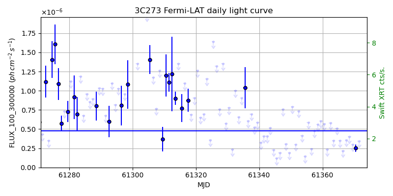
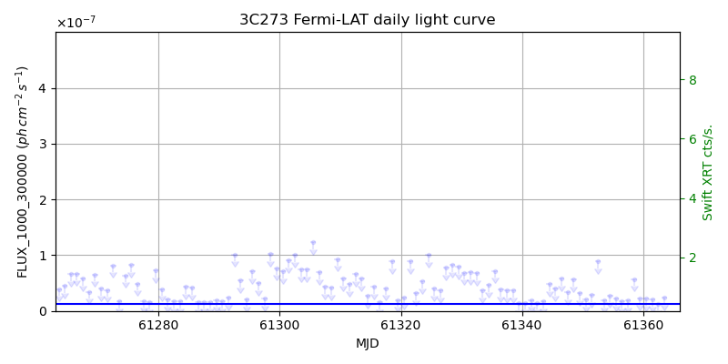
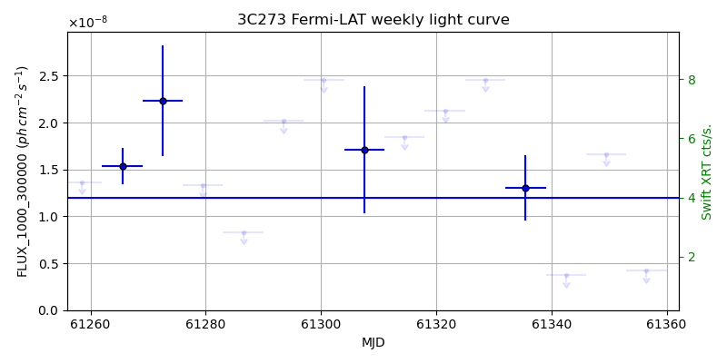

LAT Lightcurve site: https://fermi.gsfc.nasa.gov/ssc/data/access/lat/msl_lc/source/3C_273
Swift site: https://www.swift.psu.edu/monitoring/source.php?source=3C273
NED: Query
Time of last update of this page: UT: 2026-11-20 16:25 (MJD: 61364.684)
| Property | Value |
|---|---|
| R.A. | 12:29:06.72 |
| Dec. | 2:03:07.2 |
| z | 0.158 |
| 3FGL SpectrumType | LogParabola |
| 3FGL PL Index | |
| 3FGL Flux_100_300000 | 4.75e-07 1 / (s cm2) |
| 3FGL Flux_1000_300000 | 1.20e-08 1 / (s cm2) |
| 3FGL Flux >200 GeV | 4.06e-13 1 / (s cm2) |
| 3FGL Extrap. Crab >200 GeV | 0.00 |
| 3FGL Flux After EBL Absorption >200GeV | 2.71e-13 1 / (s cm2) |
| 3FGL EBL Crab Fraction >200GeV | 0.00 |

| MJD | dMJD | Flux | dFlux | Frac3FGL | FracCrab>200GeV | EBLFracCrab>200GeV |
|---|---|---|---|---|---|---|
| 61359.50 | 0.50 | 6.03e-07 | 0.00e+00 | 0.00 | 0.00 | 0.00 |
| 61360.50 | 0.50 | 5.69e-07 | 0.00e+00 | 0.00 | 0.00 | 0.00 |
| 61361.50 | 0.50 | 2.32e-07 | 0.00e+00 | 0.00 | 0.00 | 0.00 |
| 61362.50 | 0.50 | 5.79e-07 | 0.00e+00 | 0.00 | 0.00 | 0.00 |
| 61363.50 | 0.50 | 3.52e-07 | 0.00e+00 | 0.00 | 0.00 | 0.00 |
| MJD | dMJD | Flux | dFlux | Frac3FGL | FracCrab>200GeV | EBLFracCrab>200GeV |
|---|---|---|---|---|---|---|
| 61328.50 | 3.50 | 3.66e-07 | 6.45e-08 | 0.77 | 0.00 | 0.00 |
| 61335.50 | 3.50 | 4.98e-07 | 7.37e-08 | 1.05 | 0.00 | 0.00 |
| 61342.50 | 3.50 | 2.18e-07 | 0.00e+00 | 0.00 | 0.00 | 0.00 |
| 61349.50 | 3.50 | 2.37e-07 | 0.00e+00 | 0.00 | 0.00 | 0.00 |
| 61356.50 | 3.50 | 1.81e-07 | 5.45e-08 | 0.38 | 0.00 | 0.00 |

| MJD | dMJD | Flux | dFlux | Frac3FGL | FracCrab>200GeV | EBLFracCrab>200GeV |
|---|---|---|---|---|---|---|
| 61359.50 | 0.50 | 2.28e-08 | 0.00e+00 | 0.00 | 0.00 | 0.00 |
| 61360.50 | 0.50 | 2.17e-08 | 0.00e+00 | 0.00 | 0.00 | 0.00 |
| 61361.50 | 0.50 | 2.01e-08 | 0.00e+00 | 0.00 | 0.00 | 0.00 |
| 61362.50 | 0.50 | 1.30e-08 | 0.00e+00 | 0.00 | 0.00 | 0.00 |
| 61363.50 | 0.50 | 2.38e-08 | 0.00e+00 | 0.00 | 0.00 | 0.00 |

| MJD | dMJD | Flux | dFlux | Frac3FGL | FracCrab>200GeV | EBLFracCrab>200GeV |
|---|---|---|---|---|---|---|
| 61328.50 | 3.50 | 2.46e-08 | 0.00e+00 | 0.00 | 0.00 | 0.00 |
| 61335.50 | 3.50 | 1.31e-08 | 3.48e-09 | 1.09 | 0.00 | 0.00 |
| 61342.50 | 3.50 | 3.71e-09 | 0.00e+00 | 0.00 | 0.00 | 0.00 |
| 61349.50 | 3.50 | 1.67e-08 | 0.00e+00 | 0.00 | 0.00 | 0.00 |
| 61356.50 | 3.50 | 4.19e-09 | 0.00e+00 | 0.00 | 0.00 | 0.00 |
--------------------------------------------------------- Using user-supplied coords: 12:29:06.72 2:03:07.2 2000 --------------------------------------------------------- FLWO UT night of: 2026-11-21 Local Sid. @ Midnight: 03:37 Sunset (-15.0) (local, UT): 18:33 01:33 Sunrise (-15.0) (local, UT): 05:47 12:47 Moonrise (local, UT): Moonset (local, UT): 03:40 10:40 Moon phase: 0.85 --------------------------------------------------------- AzTime LSID UT Obj_el Obj_az Mn_el Mn_az Sep. --------------------------------------------------------- 18:33 22:09 01:33 -42.6 308.3 47.9 117.4 170.7 19:03 22:39 02:03 -47.3 316.5 53.3 125.0 170.5 19:33 23:09 02:33 -51.3 326.3 58.2 134.7 170.4 20:03 23:39 03:03 -54.3 337.7 62.3 146.9 170.2 20:33 00:09 03:33 -56.1 350.5 65.1 162.1 170.0 21:03 00:39 04:03 -56.4 4.1 66.3 179.7 169.9 21:33 01:09 04:33 -55.2 17.3 65.4 197.5 169.7 22:03 01:39 05:03 -52.6 29.3 62.9 213.2 169.6 22:33 02:09 05:33 -49.0 39.7 59.0 225.9 169.4 23:03 02:39 06:03 -44.5 48.6 54.2 235.9 169.2 23:33 03:09 06:33 -39.5 56.1 48.9 243.9 169.1 00:03 03:39 07:03 -34.0 62.4 43.2 250.4 168.9 00:33 04:10 07:33 -28.1 68.0 37.3 255.9 168.7 01:03 04:40 08:03 -22.1 73.0 31.2 260.7 168.6 01:33 05:10 08:33 -15.9 77.5 25.1 265.1 168.4 02:03 05:40 09:03 -9.6 81.7 19.0 269.2 168.2 02:33 06:10 09:33 -2.0 85.7 12.9 273.0 168.0 03:03 06:40 10:03 3.3 89.7 6.8 276.9 167.8 03:33 07:10 10:33 9.6 93.7 1.0 280.7 167.6 04:03 07:40 11:03 15.9 97.8 -4.9 284.7 167.4 04:33 08:10 11:33 22.2 102.1 -11.1 288.8 167.2 05:03 08:40 12:03 28.4 106.8 -16.8 293.2 167.0 05:33 09:10 12:33 34.4 112.1 -22.3 298.1 166.7 05:47 09:25 12:47 37.2 114.8 -24.8 300.5 166.6 --------------------------------------------------------- Dark hours >55 deg.: 0.00